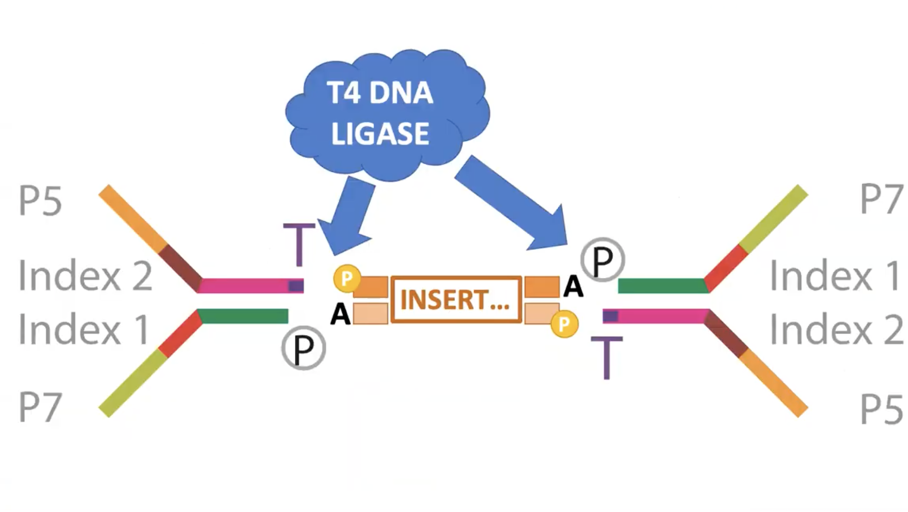

Library Preparation
August 2, 2020
Initial Quality Check
- Check DNA purity on Nanodrop (260/280 ratio shows RNA contamination)
- Check DNA concentration on Qubit Fluorometer
Fragmentation
Two main options for fragmenting the DNA
- Sonication
- Uses a sonication machine
- Pros: very little base bias in cuts made
- Cons: Sonication machines are expensive, difficult to cut DNA fragments smaller than 300bp
- Enzyme digestion
- Pros: cheaper, doesnt require large sonication machine
- Cons: Produces minor base % bias in first 10 bases of fragments
- This bias can be easily seen in FastQC results
End Repair and A Tailing
In order to ligate the necessary adapters to the fragmented sequences, the ends of the fragments need to be made compatible with those adapters. To do that we use a series of enzymes that perform the exact cuts and additions we need.
- T4 DNA Pol1 makes the ends of fragments blunt.
- T4 PNK adds phosphate to 5' makes 3' OH.
- Taq Pol adds tailing A to 3' end
Ligation
Adapters are ligated to fragments using T4 DNA Ligase.
Unique Molecular Identifiers (UMIs)
- 8-16nt barcode used to label a molecule of nucleic acid. Not commonly used but very effective for identifying PCR generated bias.
- UMIs are added between the index sequence and the DNA fragment
- There are two main UMI strategies:
- Random
- Popular
- Use many random sequences
- However if there is a sequencing error the UMI sequence you wont be able to map it back to known UMI sequence
- The same UMI sequence might be used more than once in the same library, but it doesnt matter because the chance that two PCR replicates both had the same UMI before PCR is very low, so they can still be used to identify PCR duplicates.
- Pre-designed
- Less popular
- Very expensive
- Each UMI sequence is designed beforehand, making it possible to identify any errors later on
- Random
Purification
There are multiple purification steps throughout library preparation and the goal is always the same: keep DNA fragments of the desired size and wash away contaminants. Two popular methods are:
Spin column
- Uses insert that binds DNA. Things that dont bind are washed away after spinning.
- But looses some material
- Keeps very small dsDNA including contaminants
AMPure beads
- Magnetc beads that bind DNA in the presence of a buffer.
- The strength of the binding is controlled by the buffer.
- Can select for DNA > 100bp
- Doesnt loose much DNA
PCR
To make the minimum amount of DNA required for sequencing, usually PCR needs to be done. The fewer cycles the better because PCR doesnt amplify all strands equally - biases are introduced.
Some library preparation workflows use the PCR step to attach the index and P5/P7 adapters to the fragments.
Purification
Quality Check of Final Library
You want to see < 1% concentration of adapter dimers (120bp-140bp) and primer dimers (50bp-100bp). Final libraries should be between 200-700bp. Higher concentration of these contaminants can lead to index hopping.